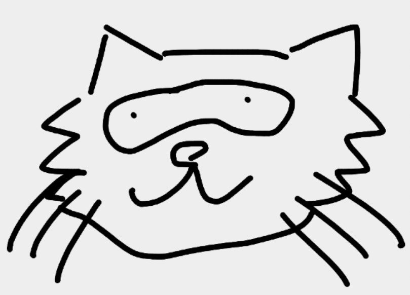
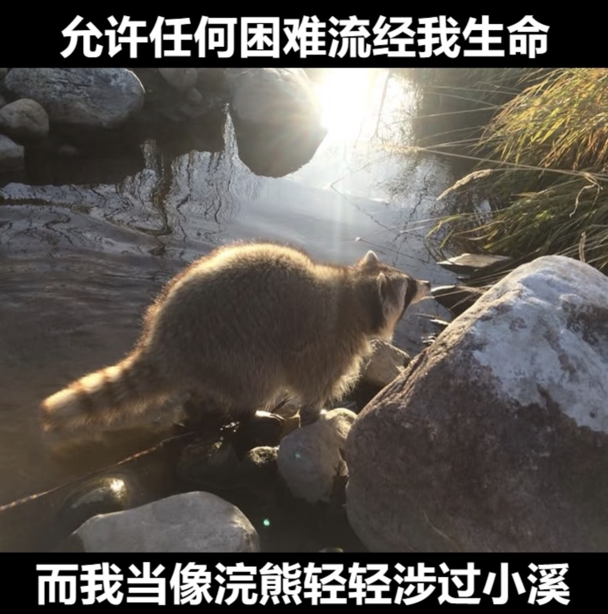
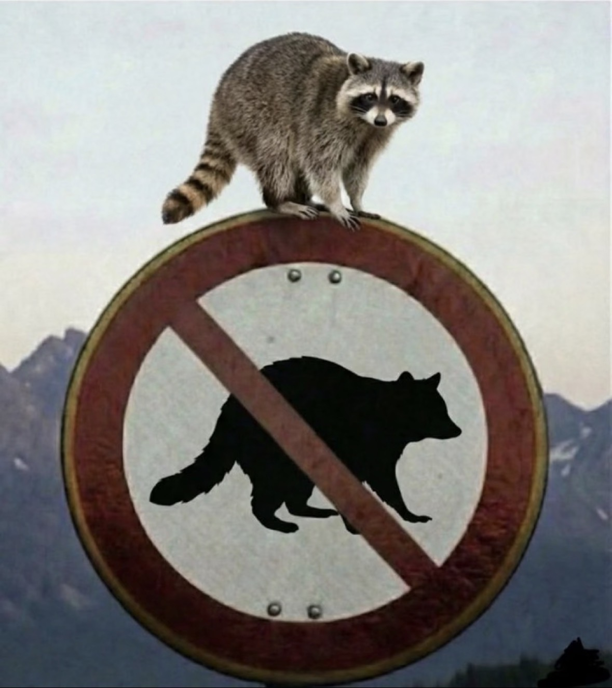
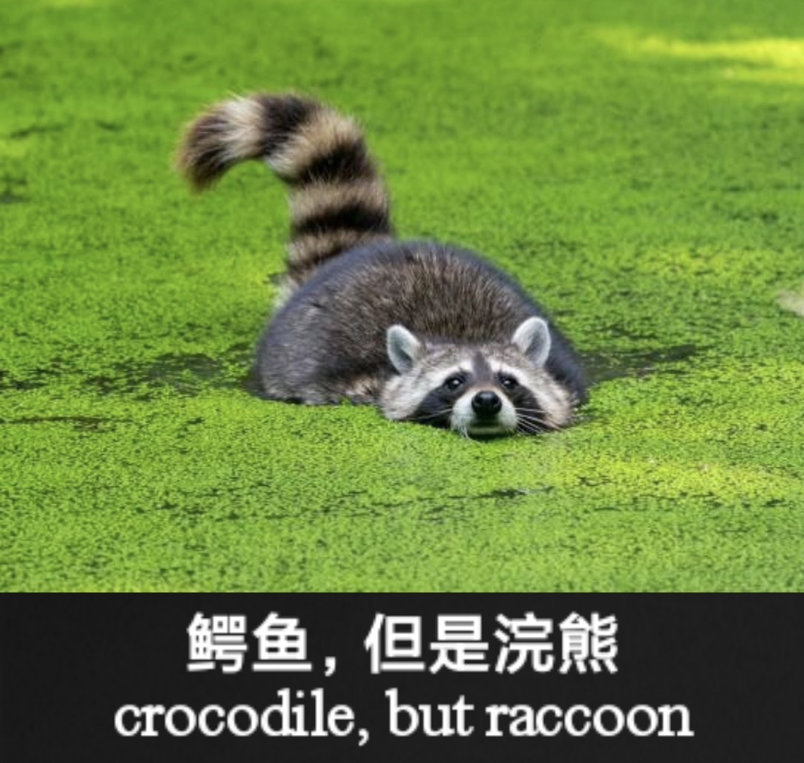

你的 AI 私人 GMAT 备考伙伴
一款由 TRAE Work 智能生成的 GMAT 备考辅助应用，融合 AI 技术与游戏化学习理念， 为每一位追梦商学院的考生打造温暖、高效、个性化的备考体验。
一个将 AI 智能与温馨陪伴完美融合的 GMAT 备考平台
「浣熊王国的 GMAT 加油站」是一款专为 GMAT 考生设计的智能化学习辅助工具。项目以一只可爱的浣熊作为品牌吉祥物， 营造轻松愉悦的学习氛围，帮助考生缓解备考焦虑。平台整合了真题练习、智能解析、计时模拟、错题分析等核心功能， 并通过 AI 技术实现个性化学习路径推荐，让每位考生都能找到最适合自己的备考节奏。
不同于传统枯燥的刷题软件，我们将「游戏化」与「情感化」设计理念贯穿始终 —— 温暖的棕色系视觉、圆润的卡片界面、浣熊 mascots 的陪伴反馈，让备考过程不再孤单。
深入洞察 GMAT 考生的真实困境
GMAT 考生需要在多个平台之间切换 —— 官方指南、第三方题库、论坛讨论、视频课程…… 信息碎片化管理困难，学习效率大打折扣。我们的平台将高质量真题、详细解析、学习统计整合于一站。
传统纸质练习或简单刷题 App 只能告诉考生「对」或「错」，却无法深入分析错误原因。 我们提供 AI 驱动的详细解析，不仅讲解正确答案，更剖析干扰项设计逻辑，帮助考生建立正确的解题思维。
GMAT 备考周期通常长达 3-6 个月，许多考生独自奋斗，缺乏陪伴与激励。 浣熊王国通过可爱的 mascots、成就系统和温馨界面设计，为考生提供情感支持，让备考之路不再孤单。
优质 GMAT 培训课程动辄上万元，对许多学生党或职场新人来说是一笔不小的负担。 我们坚持 100% 免费策略，让优质备考资源触手可及，降低教育公平的门槛。
「备考 GMAT 的那三个月，我几乎每天凌晨还在刷题。
如果有这样一个温暖又智能的工具陪伴，或许我的备考之路会轻松许多。」
TRAE Work 智能生成的四大核心模块

整合 SC（句子改错）、CR（逻辑推理）、RC（阅读理解）、TWO-PART ANALYSIS 四大科目， 每道题配有详细解析和考点标签，支持按难度、类型、考点筛选练习。

不仅告诉你答案，更教会你思考。每道题配备完整的思路分析、干扰项剖析和考点归纳， 帮助考生构建系统的 GMAT 解题方法论。

自动记录错题并分类归档，支持反复复习。通过数据分析识别薄弱考点， 生成个性化复习建议，让每一分钟的复习都精准有效。
不只是工具，更是备考路上的温暖陪伴
100% 免费开放，打破优质教育资源的付费壁垒，让每一位有梦想的学子都能获得高质量的备考支持。
AI 智能解析 + 数据分析，将传统数小时的错题整理压缩至几分钟，让考生把时间花在真正需要提升的地方。
以浣熊王国为品牌载体，用温暖的设计语言化解备考焦虑，让学习过程充满乐趣与动力。
专为中文考生优化的学习平台，所有解析和内容均使用中文呈现，降低语言理解门槛。
所有学习数据本地存储，无需注册登录即可使用，最大程度保护用户隐私与数据安全。
基于 TRAE 的 AI 开发能力，平台可快速迭代升级，持续引入更智能的学习功能。
从创意到落地的全流程 AI 协作开发
本项目完全使用 TRAE 系列工具（包括 TRAE IDE、TRAE Work 和 TRAE Plugin）进行开发， 充分展示了 AI 辅助编程的强大能力与效率提升。从需求分析到 UI 设计，从代码编写到部署上线， AI 深度参与了每一个环节。
智能题目解析生成： 利用大语言模型自动生成高质量题目解析，确保每道题都有专业级的讲解。
UI/UX 智能设计： TRAE Work 根据「温暖、友好、专注学习」的品牌调性，自动生成了完整的视觉设计系统，
包括配色方案、字体层级、卡片组件和交互动效。
代码自动生成与优化： 从项目脚手架搭建到组件开发，AI 辅助完成了 80% 以上的代码编写工作，
开发者只需聚焦于产品逻辑与创意打磨。
无论你是刚开始备考的新手，还是冲刺高分的资深考生，
浣熊王国的 GMAT 加油站都将是你最忠实的备考伙伴。